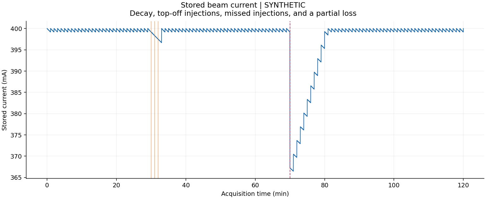
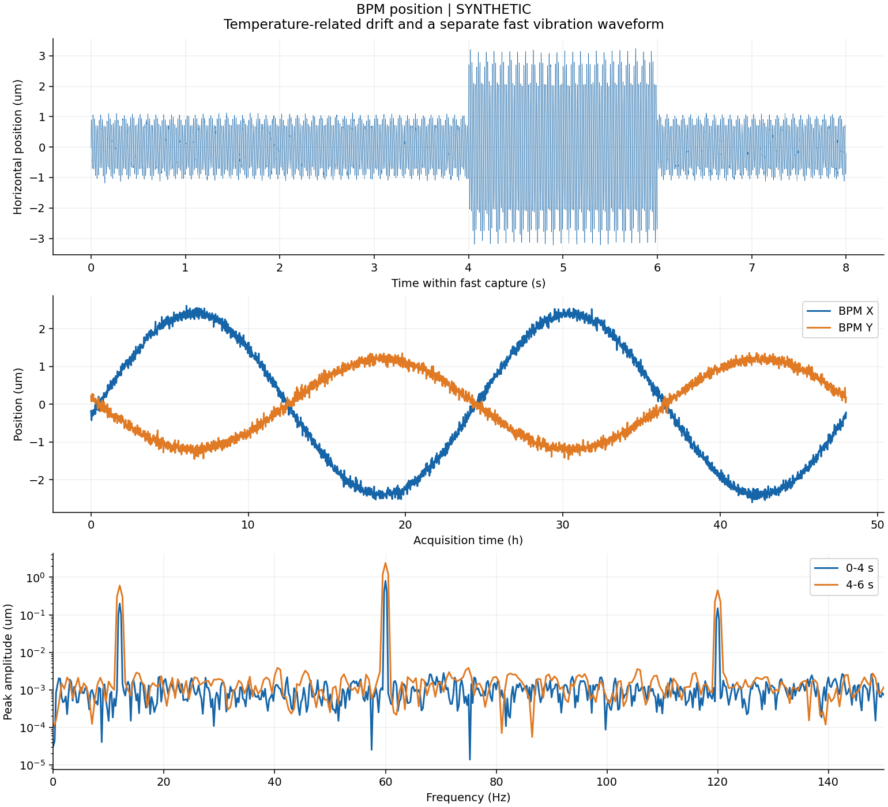
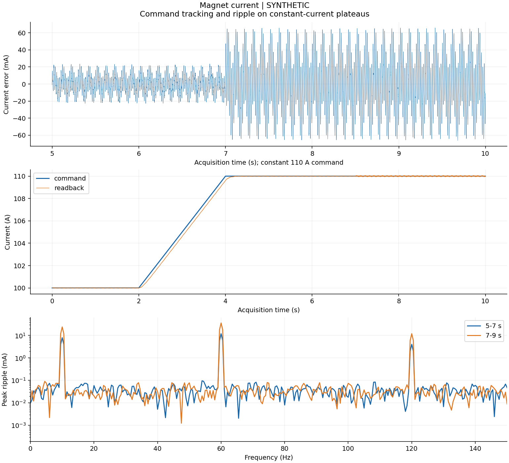
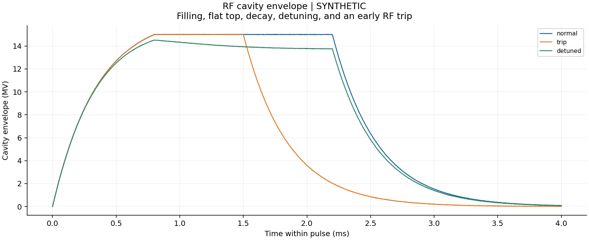
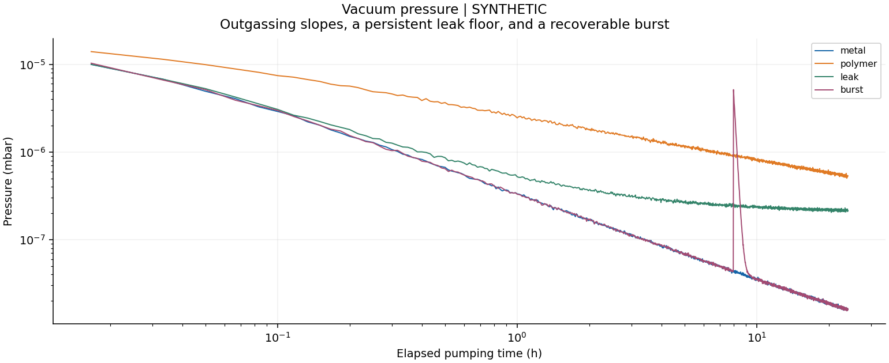
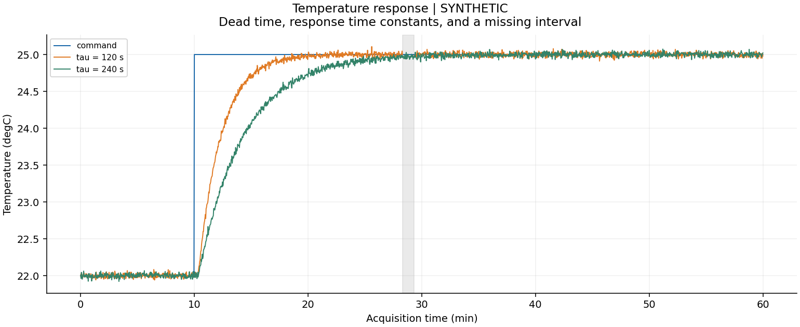
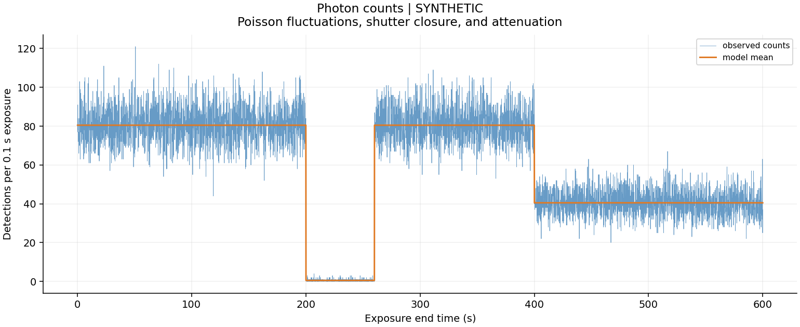
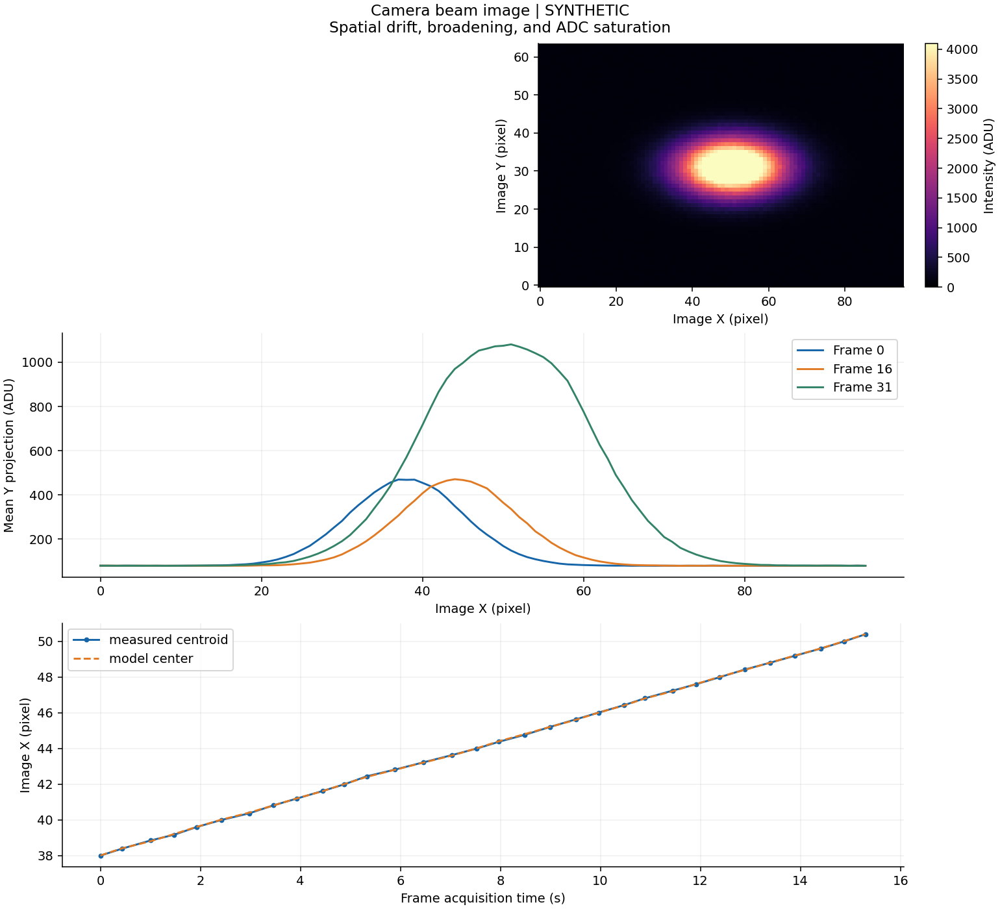

Synthetic physical signal examplesStored beam current
Decay, top-off injections, missed injections, and a partial loss

Complete JSON with units and metadata
current.csv
BPM position
Temperature-related drift and a separate fast vibration waveform

Complete JSON with units and metadata
slow.csv fast.csv
Magnet current
Command tracking and ripple on constant-current plateaus

Complete JSON with units and metadata
current.csv
RF cavity envelope
Filling, flat top, decay, detuning, and an early RF trip

Complete JSON with units and metadata
normal.csv trip.csv detuned.csv
Vacuum pressure
Outgassing slopes, a persistent leak floor, and a recoverable burst

Complete JSON with units and metadata
pressure.csv
Temperature response
Dead time, response time constants, and a missing interval

Complete JSON with units and metadata
response.csv
Photon counts
Poisson fluctuations, shutter closure, and attenuation

Complete JSON with units and metadata
counts.csv
Camera beam image
Spatial drift, broadening, and ADC saturation

Complete JSON with units and metadata
statistics.csv profile_x_000.csv profile_y_000.csv histogram_000.csv profile_x_016.csv profile_y_016.csv histogram_016.csv profile_x_031.csv profile_y_031.csv histogram_031.csv